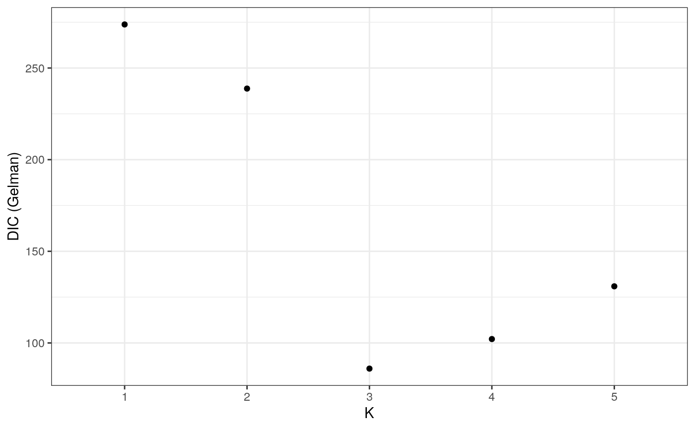

vignettes/MHCoupling.Rmd
MHCoupling.RmdThe majority of the following methodology on Bayesian model validation is adopted from Spiegelhalter et al. (2014). There are many functions silverblaze has to offer for checking the ability of the model but we’ve done very little to compare the difference between models fitting different values of K. Hence we introduce the plot_DIC_gelman() function to calculate the deviance information criterion (DIC) for each model. Let’s have a look at the DIC values for our models from tutorial 1.

As we can see the model with the lowest DIC is the one fitting 3 sources. This is exactly what we would expect given we simulated under a model where K = 3.